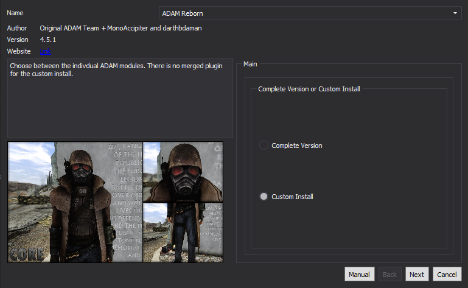
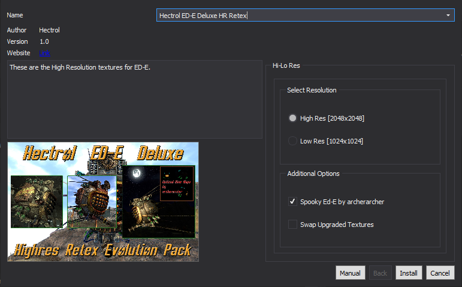

Creating a New Profile:
In order to keep a full installation of just the Core module handy, we will create a copy of the profile:
- Click the
 button on the top bar of MO2
button on the top bar of MO2 - Click on the Viva New Vegas - Core profile and select Copy
- Input Viva New Vegas - Visuals for the new name then click OK
- Select the Viva New Vegas - Visuals profile from the profile drop-down
Creating a Separator in Mod Organizer 2
- Right-click in the left pane of MO2 and select Create Separator
- Input Visuals into the pop-up and select OK
- Create another separator below that called Textures + Models
MGs Neat Clutter Retextures
Files to install normally:
- Main File - MGs NCR Pack 7
- Main File - BB Cigs
- Main File - Duct Tape
- Texture pack that focuses on clutter items that other big packs do not cover
NMC's Texture Pack
Files to install normally:
- Main File - NMCs Textures NV SMALL Pack SINGLE FILE FOR NMM
- Update File - NMC New Vegas Patch for ALL Sized packs
Hide the following:
- textures/architecture/helios_one/solar_reflector.dds
- textures/architecture/helios_one/solar_reflector_m.dds
- textures/architecture/helios_one/solar_reflector_n.dds
- Hides the textures for the solar panels at Helio One, since MG's has higher quality ones
NOTE: If you do not know how to "hide" files, go back to the Core - MO2 Config page and read the IMPORTANT: Mod Installation Advice in Mod Organizer 2 section
- Retextures almost all large objects such as landscapes and architecture
Poco Bueno
Files to install normally:
- Main File - PocoBuenoTexturePackV5
- Optional File - PocoBueno Skeleton Transparency Fix
Hide the following:
- textures/vehicles
- Hides the vehicle textures which are inferior to NMC's
- textures/architecture/goodsprings/nv_watertank.dds
- textures/architecture/goodsprings/nv_watertank_n.dds
- Hides the texture for the water tank in Goodsprings that is un-lore friendly (has a picture of Victor's face on the side)
- Optimized version of Ojo Bueno that covers both minor and major objects
Collision Meshes - Poco Bueno Patch
Files to install normally:
- Miscellaneous File - OJO BUENO Texture Pack compatibility
- Patch for Collision Meshes and Poco Bueno
NOTE: Although the patch is made for Ojo Bueno, it still works well enough (not perfectly, mind you) with Poco Bueno
Mojave Sandy Desert
Files to install normally:
- Old File - Optional - Dry Desert Textures
- Old File - Mojave Sandy Desert - Hotfix 2-1
- Retextures the terrain to dry/cracked sand and dirt
Textures Over Time
Files to install normally:
- Main File - HH_Sandstone
- Beautiful retexture the rocks from Honest Hearts
Textures Over Time LOD Fix
Install normally
- Resizes the LOD files for the Honest Hearts Sandstone so xLODGen can generate it properly, as well as resizing a rock texture that was 4k to avoid performance loss. Resizing done by McDeans and myself
ADAM Reborn
FOMOD instructions:
Hide the following:
- ADAM - MAIN.esp
- ADAM Complete.esp
- Hides the .ESPs from the mods because they contain unnecessary changes (texture replacers still work fine without them)
- Retextures most variants of NCR armor
PM's HD Ranger Outfits
Files to install normally:
- Main File - PM's HD Ranger Outfits - 2K
- Retextures casual/civilian ranger outfits and hats while staying faithful to the vanilla style
PM's HD Legion Overhaul
Files to install normally:
- Main File - PM's HD Legion Overhaul - 2K
- Retextures all types of Legion armor while staying faithful to the vanilla style
aMidianBorn Book of Water
Files to install normally:
- Main File - BOA NV The Book Of Flesh
- Main File - nov 2011 book of steel
Hide the following:
From nov 2011 book of steel:
- boa ncrpahelmet.esp
- Boacombat2glove.esp
- Retextures power armor, combat armor, and various creatures
Book of Steel Compatibility Edition
Install normally
- Cleans up and fixes the Book of Steel plugin and integrates Enclave Power Armor retextures
aMidianBorn Book Of Water Armour Fixes
Install normally
- Fixes many meshes in the Book of Steel armors to prevent glowing in the dark
Bornagain Combat Armor
Files to install normally:
- Main File - Lite Version - BornagainFNVCombatArmor2048
- Optional File - BornagainFNVCombatArmorLonesomeRoad4096
- Retextures all variants of Combat Armor
4k Realistic Pip-Boy Retexture
Files to install normally:
- Main File - Numb Squirrel Pip-Boy 4k Compressed
Special install instructions:
- Download the mod manually
- Install the downloaded archive normally through MO2
- Retextures the thing on your arm that you use sometimes
Weapon Retexture Project
Files to install normally:
- Main File - Weapon Retexture Project - WRP
- Update File - WRP Hotfix
- Retextures many conventional firearms
Cleaver and Chopper Retexture
Install normally
- HD retexture of the Cleaver and Chopper
Combat and Chance's Knife Retexture
Install normally
- HD retexture of the combat knife and its unique variant
Hatchet Retexture
Install normally
- HD retexture of the melee hatchet
EXE - Effect Textures Enhanced
Hide the following:
- textures/water
- Hides the water effect textures because they are broken, causing water to look very pixelated
- Remakes every last visual effect texture
Super Mutants HD
Files to install normally:
- Optional File - Super Mutants HD - 2k Low
- HD retextures of super mutants, nightkin, and their armors
The Molerat Extravaganza
Install normally
- 2k retexture of molerats
It's a Dog's World
Files to install normally:
- Main File - DogsWorldTextureOverhaul_Optimized_V1_0
- Gives all variants of dogs a little more detail
Ghouls Hi-Res Retexture
Install normally
- Retextures non-feral ghouls
Feral Ghouls Hi-Res Retexture
Install normally
- Retextures feral ghouls in the same style as the previous mod
Improved Robots Textures
Files to install normally:
- Main File - Improved Robots Textures - All in One (Lore Friendly)
Hide the following:
- textures/creatures/mistergutsy/mistergutsyweapons.dds
- textures/creatures/mistergutsy/mistergutsyweapons_n.dds
- Hides the texture for the weapons on Mr. Gutsys because the normal map is broken causing the texture to be shiny
- Retextures all robots in the base game + DLC
Ojo Bueno Securitrons
Install normally
- Retexture of Securitrons from the mod Ojo Bueno
Hectrol Ed-E HR Retex
FOMOD Instructions:
- Retexture with custom glow maps of Ed-E and all his variants
High Resolution Newspapers
Install normally
- Retextures the framed newspapers in casinos
NOTE: The newspapers are in color, which some lore purists may not like. This patch makes the newspapers black and white (original mod still required)
Magazine Redux
Files to install normally:
- Main File - MagRedux 1024x1024
- Update File - MagRedux QuickFix
- Retextures... magazines (it's really hard for me to write interesting descriptions about these, okay?)
HiRes Skill Books Retexture
Install normally
- Retextures skill books
PMs Med Textures
Files to install normally:
- Main File - PM's Med-Textures v1.0
- Optional File - PM's Med-X Texture
- Retexture of chems/meds that retain the vanilla style
PM's HD Ammo Boxes
Files to install normally:
- Main File - PM's HD Ammo Boxes - 1K Diffuse 512px Normals
- Vanilla-styled retexture of all ammo boxes
High Res Vanilla Water Bottle Textures and Meshes
Install normally
- Vanilla-styled retexure of dirty and purified water
Semi-Transparent Door Glass
Hide the following:
- STDG.esp
- Makes glass on appropriate doors transparent
Semi-Transparent Door Glass ESP Replacer
Install normally
- Removes edits to cells that would make the entire interior invisible, reverts wild edits to the water levels of certain cells, and forwards YUPs fixes
Bathroom Doors Fix
Install normally
- Changes all windowed bathroom doors to windowless doors
McCarran Escalator Glass
Install normally
- Makes the glass on the McCarran Escalator transparent
Transparent Nuka Bottles
Install normally
- Makes empty Nuka-Cola bottles transparent
Simple Glowing Ranger Visors
Files to install normally:
- Main File - Simple Glowing Ranger Visors (No Neck Covers)
- Optional File - ADAM Reborn Patch
- Makes the visors of all the Ranger Helmets emit light in the dark
Fallout 4 Robobrains
Install normally
- Adds an eye and an animated bubbling effect to the robobrains like in Fallout 4
Securitrons in CRT
Files to install normally:
- Main File - Securitrons in CRT 1.0
- Optional File - OWB in CRT
- Adds CRT scan-lines to Securitrons and OWB think tanks' monitors
Strip Wall Billboards
Install normally
- Gives the billboards that surround the Strip actual pictures
Bighorner Model Variants
Files to install normally:
- Main File - Bighorner Model Variants - Standard
- Adds a visual difference between Bighorners, their calfs and their bulls
Character Expansions Revised
Files to install normally:
- Main File - Character Expansions Revised
- Optional File - Character Expansions Revised - YUP
- Visual overhaul of characters’ faces that stays true to vanilla aesthetics
A Note About Character Overhauls:
Character Expansions Revised is my favorite face overhaul because it is the most vanilla-esque and minimal. If you want to use a more noticeable face overhaul, the only real option is Qwinn's Refined FNV Redesigned 3. It is a cleaned up and fixed version of New Vegas Redesigned 3 by Dracomies that comes with pre-built character face gen and many compatibility patches. See the mod page and the original mod page for screenshots/install instructions/etc. The mod comes with patches for mods in future sections, so it might be a better idea to install it as late as possible so you can select all necessary patches.
Vanilla Underwear Replacer
Install normally
- Removes the undershirt for males and tweaks the shape of the female top
Better Pause Menu Screen
Install normally
- Replaces the pause menu with a blurred image of your gameplay
Subtle Camera Motion
Install normally
- Replaces the camera movement in every 1st person animation with more subtle motion